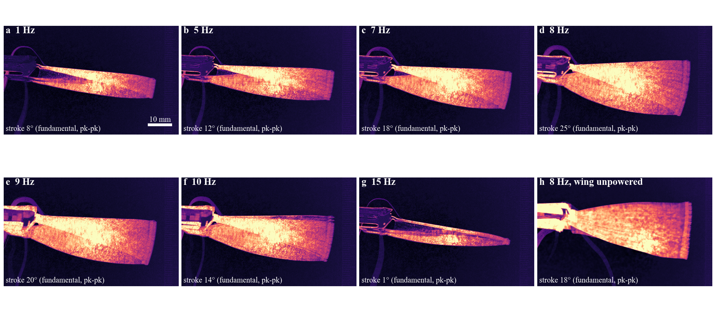

Active membrane wings / Analysis
Analysis and discussion
What the high-speed videos of the robot say about one question: does powering the wing change how the robot flaps? Measured from the wing tip, the stroke is the same with the wing powered and unpowered; its shape may differ. An earlier reading of a 20 % larger stroke came from the tracker, and this page shows how.
The robot across the sweep

The area the wing sweeps grows from 1 to 8 Hz and collapses by 15 Hz: one resonance near 8–9 Hz. The unpowered run (h) sweeps a similar fan at 8 Hz.
The same stroke

Measured from the tip, the stroke is 23.8 ± 1.0° with the wing powered and 24.4 ± 1.1° with it unpowered (33 cycles each), and the tip moves 23.8 ± 1.0 against 22.1 ± 1.0 mm. The difference in degrees and in millimetres has opposite signs and is within the calibration of the two camera set-ups (the unpowered view is zoomed, 0.135 against 0.152 mm per pixel, and the hinge of each view is found from the tip's path). Powering the wing does not change the stroke size measurably.
How the 20 % arose

The first analysis fitted a line to the top edge of the wing's dark silhouette. When the camera looks from below, as in the powered run, that edge is the spar, and the silhouette and the tip give the same stroke (c, blue). The unpowered run was filmed from above with the camera moved and zoomed; near the bottom of the stroke the top edge is a faint feature above the spar, and the fitted line clips the stroke by about 4° (c, orange). That made the unpowered stroke look 20 % smaller, gave it a lopsided shape, and produced the "snap" in the apparent bend of the leading edge. The carbon spar itself cannot bend at these frequencies: its first bending mode is 300–900 Hz.
The shape of the stroke
With the tip, the asymmetry of the stroke spring (harmonic balance on $X_2/X_1^2$) is one real value for all powered runs, +0.18 to +0.31 at 7–8 Hz and 1.2–1.4 kV, and -0.43 for the unpowered run, with an imaginary part 5 s.d. from zero (a lag at 16 Hz). That is the one remaining difference between the runs. It is consistent with the edge's tension acting on the stroke (a tense edge pulling more on one side), but the runs were filmed 20 min apart and the robot's free frequency differed between the two sessions (8.6 and 9.0 Hz in the decays), so a change of the robot itself is as likely.
What the models can and cannot say
- The stroke: one resonance with a lagging force fits the sweep (8.38 Hz, damping 0.07, lag 38 ± 13 ms), and with one real quadratic term it predicts the powered 2nd harmonic.
- Withdrawn: a 17 Hz wing mode and an edge tension of about 4 mN inferred from it. They were fitted to the silhouette track of the unpowered run, which is not the stroke; they also predicted a second free mode that the decays do not show.
- Details and tests: Models.
Natural frequency

The robot behaves as one resonator: the stroke peaks at 8 Hz, next to its natural frequency of 8.4 Hz, with a damping ratio of 0.07; the peak is half as high as the damping allows because the DEA force lags the voltage by about 40 ms. The spring softens at large stroke, which broadens the measured peak.
Further analysis
Powering the wing does not change how far B-cube flaps; at most it changes the shape of the stroke, and that difference cannot yet be separated from a change of the robot between the two sessions. The earlier +20 % was a measurement error with a clear cause: a silhouette tracker meets a membrane wing filmed from a new camera position. The lesson for the next test is the method: track the tip about its fitted hinge, keep the camera fixed, log the drive with an LED, and switch the wing on and off every 10 s within one session. If the asymmetry then follows the switching, the wing's tension acts on the stroke; if not, the robot drifted.
Method
Phantom VEO 710L, 200 fps, 832 × 600 px; 0.152 mm/px (0.135 for the unpowered side view) from the ruler. Tip: in each frame, dark pixels against the per-pixel background (97th percentile) in a band around the wing; the tip is the centroid of those within 8 px of the farthest; the hinge is the centre of the least-squares circle through the tip's path; the stroke is the angle of the tip about it. Harmonics by least-squares Fourier fit at the drive frequency, spread from 0.5 s blocks. Code: flapping/code (tip_track.py, hb_tip.py; track.py is the silhouette tracker).